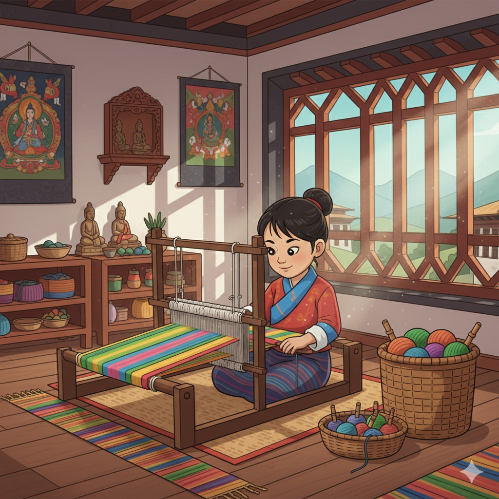

1. Our Purpose: Weaving and the Bhutan Baccalaureate 🇧🇹
At The Royal Academy (TRA), Thagzo (Textile Weaving) is taught as a central discipline within the Aesthetics Domain, fulfilling the Bhutan Baccalaureate's dual goals of cultural preservation and holistic development. The process of weaving, from preparing the raw material to executing complex motifs, inherently demands discipline, patience, and meticulous planning.
Connecting to the Five Areas of Development:
- 🧠 Cerebral Development: Designing and calculating complex patterns (like the Kushuthara motif) improves mathematical reasoning and abstract spatial planning. Students map out warp and weft counts before touching the loom.
- ❤️ Emotional Development: The long, repetitive, yet rewarding process of operating the loom cultivates patience, focus, and dedication, essential for emotional maturity and resilience.
- 👥 Social Development: Learning regional patterns (e.g., from Lhuntse or Bumthang) and techniques fosters an understanding of community heritage and the role of textiles as social and ceremonial markers.
- 💪 Physical Development: Operating the loom (especially the traditional backstrap loom) and preparing thread develops fine motor skills, hand-eye coordination, and body rhythm necessary for maintaining tension and pattern accuracy.
- ✨ Spiritual Development: The use of color symbolism (e.g., the five cardinal colors representing elemental forces) and sacred patterns connects students to the philosophical and spiritual context of Bhutanese life and Buddhist principles.
2. The Cultural Significance of Thagzo 🎨
Thagzo (Textile Weaving) is considered one of Bhutan’s most prominent and complex crafts, primarily practiced by women. Textiles are more than just clothing; they are markers of status, wealth, and profound artistic skill. Each garment, especially the intricate Kira (for women) and Gho (for men), tells a story through its color combinations and complex symbolic patterns.
3. Beginner Practice: Upcycling and Simple Construction ♻️
In the early stages of textile education at TRA, students focus on developing foundational dexterity, understanding material properties, and practicing sustainability through creative re-use. This hands-on approach builds confidence before tackling the complex designs of traditional looms.
Core Starter Projects:
- 🧵 Material Repurposing (Thrift-Fluff): Students collect textile scraps, old clothing, or discarded yarns and learn techniques to process them into new usable fibers (e.g., twisting strips into cord or chopping them for stuffing). This emphasizes the value of all raw materials.
- 🧶 Simple Dolls and Soft Toys: Using the repurposed materials, students practice basic sewing, stuffing, and assembly techniques to create small, simple dolls (like Gokey dolls) or hand-stitched toys. This task improves fine motor control and 3D form building.
- ♻️ Patchwork & Mending: Introduction to various hand-stitching methods by repairing and decorative patching of old garments or fabric swatches. This instills the GNH value of durability and anti-consumerism.
- 📐 Frame Loom Basics: Students use simple handheld or box frames to weave small, simple coasters or wall hangings. This introduces the core concepts of warp and weft and maintaining tension without the complexity of a traditional backstrap loom.
4. Principal Garments and Forms 👘
Textiles are central to Bhutanese identity, manifested in the national dress and important ritual items.
Main Forms of Textile:
- Kira (Women's Dress): A large, rectangular piece of fabric wrapped around the body. High-quality Kiras, particularly those with Kushuthara patterns, are generational heirlooms.
- Gho (Men's Garment): A knee-length robe tied at the waist with a woven belt (Kera). The pattern and quality of the fabric often denote the wearer's region or status.
- Ceremonial Fabrics: Includes richly patterned altar cloths, temple banners, and cushion covers, which incorporate the same complex geometric and figurative motifs as the clothing.